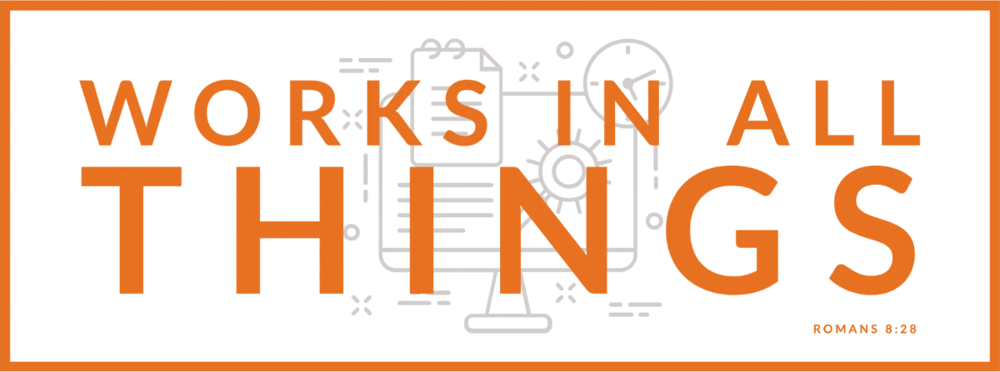
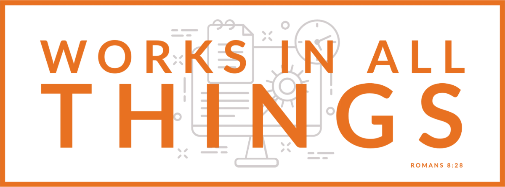

Do
- Use the supplied PNG or WebP files.
- Give the logo generous, quiet space.
- Keep the orange-and-grey treatment together.
worksinallthings.com / brand
The shared reference for Works In All Things—built from the brand system now live on the official site.
Download assets ↓
Brand foundation
Works In All Things makes Rock RMS plugins that remove everyday friction for staff and volunteers. The brand should feel capable, considerate, and built for real ministry—not flashy software for its own sake.
01 / Logo

Primary logo on the extracted dark background.
Clear-space and minimum-size values are not published. These are conservative working rules pending owner approval.
02 / Color
#E87121#0C0D10#E5E5E5#14161B#A3A9B6#F39552Orange is an accent and action color—not a large-field replacement for the dark base. Maintain readable contrast; do not set long body copy in orange.
03 / Typography
Lato / 700
Made for ministry.
Lato / 400
Simple to set up, aligned with Rock’s standards, and easy to remove if needed. Lead with the practical benefit, then make the next step obvious.
Use Lato Bold. Keep statements short, useful, and sentence case.
Use Lato Regular with comfortable line height. Use plain language before technical detail.
When Lato is unavailable: system-ui, -apple-system, Segoe UI, Arial, sans-serif.
04 / Voice
“A TV player for any Linux computer.”
“Clear setup guides, a FAQ, and a real person to email.”
“Revolutionary ministry enablement solutions.”
“The ultimate platform for church transformation.”
Prefer concrete outcomes, honest constraints, and simple verbs. Speak to church staff and volunteers as capable people with limited time. Technical detail is welcome when it helps someone act.
05 / Downloads
These files were collected from the official site on 2026-11-09. Use only for authorized Works In All Things communications; they are not a license grant.
Open questions